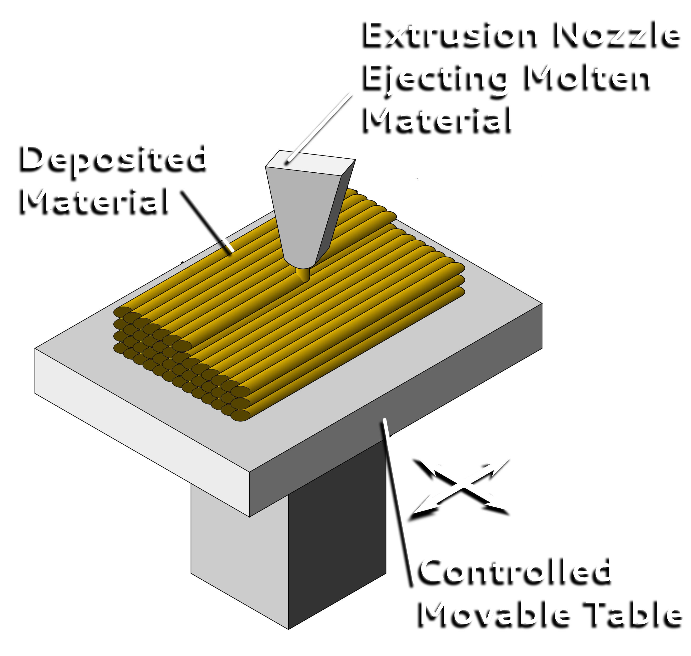

3D Printing is the operation of turning a 3D digital model into tangible objects by printing numerous successive thin layers of a material. Currently 3D Printing goes by the term Additive Manufacturing due to how it prints in successive layers.
The technology was first conceived in the 1980’s and was originally termed Rapid Prototyping because of the speed and cost as compared to traditional prototype creation methods. As the technology has grown the price has come down significantly. The first year a 3D Printer was available for purchase for under $10,000 was in 2007. Since then the technology has continued to grow and 3D Printers are now available for hobbyists for as little as $300, although professional-grade printers can still costs in the thousands.
3D Printing mainly used plastics in the form of filament when it was first introduced. Now 3D Printers are capable of producing prints from plastics, metals, concrete, ceramics, paper, bio materials, proprietary materials, and even food. As the technology grows it can be expected to take on new forms to provide benefits for multiple classes of enterprise and people.
How It Works
There are copious forms of 3D Printing from Stereolithography to Selective Deposition Lamination, but the most common is Extrusion, also known as Fused Deposition Modeling (FDM). Freeform Fabrication (FFF) is another term of a very similar process coined by the RepRap project team to obtain a legally unconstrained term.
The process starts with a file from 3D modeling software that is to be printed. These files can be created within modeling software or a real object can be scanned with a 3D Scanner. Once a complete file is created the printing process can begin.
Extrusion/Fused Deposition Modeling (FDM) Process
Plastic filament is fed from a coil to an extrusion nozzle which is capable of modulating the flow of material. The nozzle heats up to melt the plastic filament and through control via modeling software can move horizontally and vertically. Objects are printed one layer at a time by extruding melted material that hardens immediately after extrusion.

The most widely used filament materials are Acrylonitrile Butadiene Styrene (ABS) and Polylactic Acid (PLA) but other materials are available.
Current Uses
Medical
Bio-printing
Medical Devices
Pills
Industrial
Automotive
Construction
Firearms
Sociocultural
Art
Domestic Use
Research
Future Uses
3D Printing technology has been an unstoppable force since its inception. The number of materials and potential uses have multiplies as the technology has advanced. The developments of new uses have yet to slow and the technology becomes more useful by the day. Someday this technology could have a place in every home and business. The future utilization possibilities of 3D Printing technology are endless.